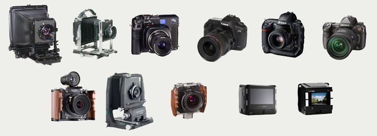

Advantages already in consumer level cameras
Main article: Digital versus film photography
The primary advantage of consumer-level digital cameras is the low recurring cost, as users need not purchase photographic film. Processing costs may be reduced or even eliminated. Digicams tend also to be easier to carry and to use, than comparable film cameras. They more easily adapt to modern use of pictures. Some, particularly those that are smartphones, can send their pictures directly to e-mail or web pages or other electronic distribution.

Advantages of professional digital cameras
- Immediate image review and deletion is possible; lighting and composition can be assessed immediately, which ultimately conserves storage space.
- High volume of images to medium ratio; allowing for extensive photography sessions without changing film rolls. To most users a single memory card is sufficient for the lifetime of the camera whereas film rolls are a re-incurring cost of film cameras.
- Faster workflow: Management (colour and file), manipulation and printing tools are more versatile than conventional film processes. However, batch processing of RAW files can be time consuming, even on a fast computer.
- Precision and reproducibility of processing: since processing in the digital domain is purely numerical, image processing using deterministic (non-random) algorithms is perfectly reproducible and eliminates variations common with photochemical processing that make many image processing techniques difficult if not impractical.
- Digital manipulation: A digital image can be modified and manipulated much easier and faster than with traditional negative and print methods. The digital image to the right was captured in Raw image format, processed and output in 3 different ways from the source RAW file, then merged and further processed for color saturation and other special effects to produce a more dramatic result than was originally captured with the RAW image.
Manufacturers such as Nikon and Canon have promoted the adoption of digital single-lens reflex cameras (DSLRs) by photojournalists. Images captured at 2+ megapixels are deemed of sufficient quality for small images in newspaper or magazine reproduction. Eight- to 24-megapixel images, found in modern digital SLRs, when combined with high-end lenses, can approximate the detail of film prints from 35 mm film based SLRs.
Disadvantages of digital cameras
- High ISO image noise may manifest as multicolored speckles in digital images, rather than the less-objectionable "grain" of high-ISO film. While this speckling can be removed by noise-reduction software, either in-camera or on a computer, this can have a detrimental effect on image quality as fine detail may be lost in the process.
- As with any sampled signal, the combination of regular (periodic) pixel structure of common electronic image sensors and regular (periodic) structure of (typically man-made) objects being photographed can cause objectionable aliasing artefacts, such as false colors when using cameras using a Bayer pattern sensor. Aliasing is also present in film, but typically manifests itself in less obvious ways (such as increased granularity) due to the stochastic grain structure (stochastic sampling) of film.
For many consumers, the advantages of digital cameras outweigh the disadvantages. Some professional photographers still prefer film. Concerns that have been raised by professional photographers include: editing and post-processing of RAW files can take longer than 35mm film, downloading a large number of images to a computer can be time-consuming, shooting in remote sites requires the photographer to carry a number of batteries, equipment failure—while all cameras may fail, some film camera problems (e.g., meter or rangefinder problems, failure of only some shutter speeds) can be worked around. As time passes, it is expected that more professional photographers will switch to digital.
Equivalent features
Image noise / grain
Noise in a digital camera's image may sometimes be visually similar to film grain in a film camera.
Speed of use
Turn of the century digital cameras had a long start-up delay compared to film cameras, i.e., the delay from when they are turned on until they are ready to take the first shot, but this is no longer the case for modern digital cameras with start-up times under 1/4 seconds.
Frame rate
While some film cameras could reach up to 10 fps, like the Canon EOS-1V HS,[25] professional digital SLR cameras can take still photographs at highest frame rates. While the Sony SLT technology allows rates of up to 12 fps, the Canon EOS-1Dx can take stills at a 14 fps rate. The Nikon F5 is limited to 36 continuous frames (the length of the film) while the Canon EOS-1D Mark III is able to take about 110 high definition JPEG images before its buffer must be cleared and the remaining space on the storage media can be used.
Image longevity
Depending on the materials and how they are stored, analog photographic film and prints may fade as they age. Similarly, the media on which digital images are stored or printed can decay or become corrupt, leading to a loss of image integrity.
Colour reproduction
Colour reproduction (gamut) is dependent on the type and quality of film or sensor used and the quality of the optical system and film processing. Different films and sensors have different color sensitivity; the photographer needs to understand his equipment, the light conditions, and the media used to ensure accurate colour reproduction. Many digital cameras offer RAW format (sensor data), which makes it possible to choose color space in the development stage regardless of camera settings.
Even in RAW format, however, the sensor and the camera's dynamics can only capture colors within the gamut supported by the hardware. When that image is transferred for reproduction on any device, the best possible gamut is the gamut that the end device supports. For a monitor, it is the gamut of the display device. For a photographic print, it is the gamut of the device that prints the image on a specific type of paper. Color gamut or Color space is an abstract term that describes an area where points of color fit in a three-dimensional space.
Professional photographers often use specially designed and calibrated monitors that help them to reproduce color accurately and consistently.
Frame aspect ratios
Most digital point & shoot cameras have an aspect ratio of 1.33 (4:3), the same as analog television or early movies. However, a 35 mm picture's aspect ratio is 1.5 (3:2). Several digital cameras take photos in either ratio, and nearly all digital SLRs take pictures in a 3:2 ratio, as most can use lenses designed for 35 mm film. Some photo labs print photos on 4:3 ratio paper, as well as the existing 3:2. In 2005 Panasonic launched the first consumer camera with a native aspect ratio of 16:9, matching HDTV. This is similar to a 7:4 aspect ratio, which was a common size for APS film. Different aspect ratios is one of the reasons consumers have issues when cropping photos. An aspect ratio of 4:3 translates to a size of 4.5"x6.0". This loses half an inch when printing on the "standard" size of 4"x6", an aspect ratio of 3:2. Similar cropping occurs when printing on other sizes, i.e., 5"x7", 8"x10", or 11"x14".